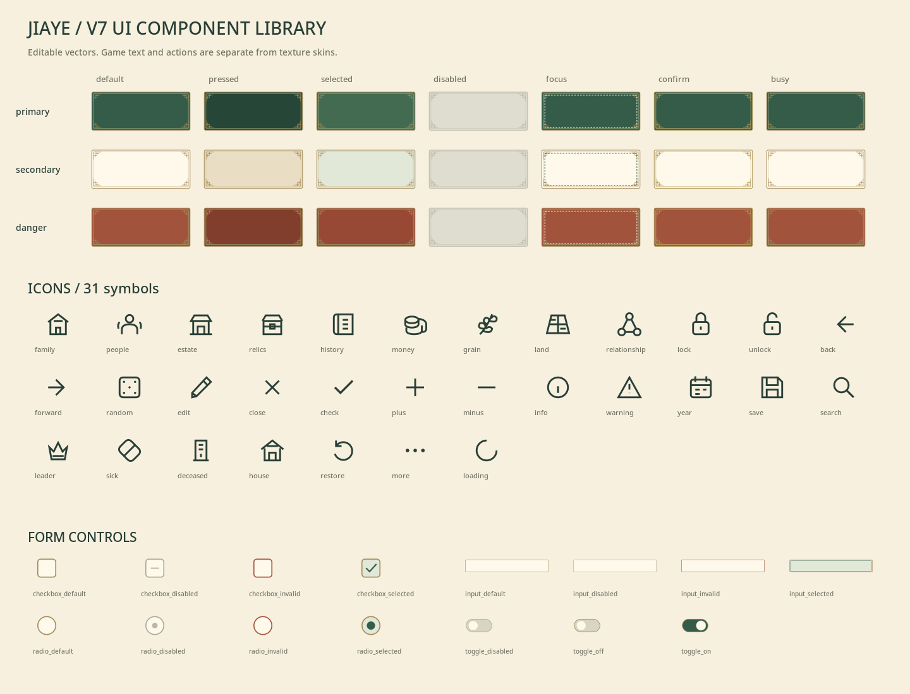

<!doctype html><html lang="zh-CN"><meta charset="utf-8"><meta name="viewport" content="width=device-width,initial-scale=1"><title>家业 V7 美术资源</title><style>
*{box-sizing:border-box}body{margin:0;background:#f7f0df;color:#293f37;font-family:-apple-system,BlinkMacSystemFont,"PingFang SC","Microsoft YaHei",sans-serif}header{padding:35px max(24px,calc((100vw - 1160px)/2));border-bottom:1px solid #d5c7a7;background:#eee8d8}h1{font-size:38px;letter-spacing:3px;margin:9px 0 15px;font-family:serif}.eyebrow{font-size:12px;letter-spacing:3px;color:#737466}.lead,.note{font-size:14px;color:#737466;line-height:1.8;max-width:980px}nav{display:flex;gap:6px;justify-content:center;position:sticky;top:0;background:#f7f0df;z-index:5;padding:10px;border-bottom:1px solid #d5c7a7;overflow:auto}button,a.link{font:inherit;min-height:44px;padding:10px 14px;background:#fff9eb;border:1px solid #d5c7a7;border-radius:3px;color:inherit;text-decoration:none;cursor:pointer;white-space:nowrap}button.active{background:#355c49;color:#fff9eb;border-color:#a48b58}main{max-width:1200px;padding:24px;margin:auto}.bar{display:flex;gap:7px;flex-wrap:wrap;margin:17px 0}h2{font-family:serif;font-size:26px;margin:8px 0}.grid{display:grid;grid-template-columns:repeat(4,minmax(0,1fr));gap:15px}.grid.wide{grid-template-columns:repeat(2,minmax(0,1fr))}.card{border:1px solid #d5c7a7;background:#fff9eb;padding:13px}.card img{display:block;width:100%;height:auto}.portrait{height:275px!important;object-fit:contain}.imagebox{position:relative;background:#fff9eb}.imagebox.dark{background:#1e332b}.overlay{position:absolute;inset:0;object-fit:contain;height:100%!important;pointer-events:none}.label{font-size:15px;font-weight:650;margin:10px 0 5px}.path{font-family:monospace;font-size:11px;overflow-wrap:anywhere;line-height:1.7;color:#737466}.icon-grid{display:grid;grid-template-columns:repeat(8,1fr);gap:12px}.icon{padding:15px;text-align:center;background:#fff9eb;border:1px solid #d5c7a7}.icon img{width:32px;height:32px;margin:6px 0 12px}.proof{margin:22px 0;padding:13px 17px;border-left:2px solid #a48b58;background:#fff9eb;font-size:13px;line-height:1.8}.skin{position:relative;margin:14px 0}.skin img{height:62px;object-fit:fill}.skin span{position:absolute;inset:0;display:grid;place-content:center;font-size:14px;color:#fff9eb}.skin.secondary span{color:#293f37}.skin.disabled span{color:#77796d}.doc{display:block;color:inherit;text-decoration:none;padding:23px;border:1px solid #d5c7a7;background:#fff9eb}.doc strong{display:block;margin-bottom:10px;font-size:19px}footer{text-align:center;font-size:12px;color:#737466;border-top:1px solid #d5c7a7;padding:24px;margin-top:24px}@media(max-width:760px){header{padding:24px}h1{font-size:29px}nav{justify-content:flex-start}.grid{grid-template-columns:repeat(2,minmax(0,1fr))}.grid.wide{grid-template-columns:1fr}.icon-grid{grid-template-columns:repeat(4,1fr)}.portrait{height:200px!important}main{padding:17px}}
</style><header><div class="eyebrow">JIAYE / V7 ART LIBRARY · 1.0</div><h1>家业 · 美术资源制作版</h1><p class="lead">固定美术身份，独立状态与插画，可编辑SVG和PNG。名字、数值和关系留在游戏里。这是矢量制作版，不是手绘水墨成片的完整高清复刻。</p><div class="bar"><a class="link" href="ASSET_MANIFEST.md">完整资源清单 ↗</a><a class="link" href="source/UI_COMPONENT_LIBRARY.svg">UI矢量总板 ↗</a><a class="link" href="README.md">接入说明 ↗</a></div></header><nav id="nav"></nav><main id="main"></main><footer>无字体文件、无PSD/原生Figma。未修改GitHub或执行UrhoX/真机验收。</footer><script>
const DATA={"characters": {"portrait_m01": {"sexPresentation": "男", "identityAnchors": "方下颌、平眉、右眼外侧小痣、青灰衣", "stages": {"infant": {"detail": "assets/characters/portrait_m01/infant_detail.png", "source": "assets/characters/portrait_m01/infant_detail.svg", "detail_sick": "assets/characters/portrait_m01/infant_detail_sick.png", "detail_deceased": "assets/characters/portrait_m01/infant_detail_deceased.png", "normal": "assets/characters/portrait_m01/infant_normal_256.png", "sick": "assets/characters/portrait_m01/infant_sick_256.png", "deceased": "assets/characters/portrait_m01/infant_deceased_256.png", "selected": "assets/characters/portrait_m01/infant_selected_256.png"}, "child": {"detail": "assets/characters/portrait_m01/child_detail.png", "source": "assets/characters/portrait_m01/child_detail.svg", "detail_sick": "assets/characters/portrait_m01/child_detail_sick.png", "detail_deceased": "assets/characters/portrait_m01/child_detail_deceased.png", "normal": "assets/characters/portrait_m01/child_normal_256.png", "sick": "assets/characters/portrait_m01/child_sick_256.png", "deceased": "assets/characters/portrait_m01/child_deceased_256.png", "selected": "assets/characters/portrait_m01/child_selected_256.png"}, "young": {"detail": "assets/characters/portrait_m01/young_detail.png", "source": "assets/characters/portrait_m01/young_detail.svg", "detail_sick": "assets/characters/portrait_m01/young_detail_sick.png", "detail_deceased": "assets/characters/portrait_m01/young_detail_deceased.png", "normal": "assets/characters/portrait_m01/young_normal_256.png", "sick": "assets/characters/portrait_m01/young_sick_256.png", "deceased": "assets/characters/portrait_m01/young_deceased_256.png", "selected": "assets/characters/portrait_m01/young_selected_256.png"}, "adult": {"detail": "assets/characters/portrait_m01/adult_detail.png", "source": "assets/characters/portrait_m01/adult_detail.svg", "detail_sick": "assets/characters/portrait_m01/adult_detail_sick.png", "detail_deceased": "assets/characters/portrait_m01/adult_detail_deceased.png", "normal": "assets/characters/portrait_m01/adult_normal_256.png", "sick": "assets/characters/portrait_m01/adult_sick_256.png", "deceased": "assets/characters/portrait_m01/adult_deceased_256.png", "selected": "assets/characters/portrait_m01/adult_selected_256.png"}, "elder": {"detail": "assets/characters/portrait_m01/elder_detail.png", "source": "assets/characters/portrait_m01/elder_detail.svg", "detail_sick": "assets/characters/portrait_m01/elder_detail_sick.png", "detail_deceased": "assets/characters/portrait_m01/elder_detail_deceased.png", "normal": "assets/characters/portrait_m01/elder_normal_256.png", "sick": "assets/characters/portrait_m01/elder_sick_256.png", "deceased": "assets/characters/portrait_m01/elder_deceased_256.png", "selected": "assets/characters/portrait_m01/elder_selected_256.png"}}}, "portrait_m02": {"sexPresentation": "男", "identityAnchors": "长椭圆脸、细长眼、左眉外挑、灰蓝衣", "stages": {"infant": {"detail": "assets/characters/portrait_m02/infant_detail.png", "source": "assets/characters/portrait_m02/infant_detail.svg", "detail_sick": "assets/characters/portrait_m02/infant_detail_sick.png", "detail_deceased": "assets/characters/portrait_m02/infant_detail_deceased.png", "normal": "assets/characters/portrait_m02/infant_normal_256.png", "sick": "assets/characters/portrait_m02/infant_sick_256.png", "deceased": "assets/characters/portrait_m02/infant_deceased_256.png", "selected": "assets/characters/portrait_m02/infant_selected_256.png"}, "child": {"detail": "assets/characters/portrait_m02/child_detail.png", "source": "assets/characters/portrait_m02/child_detail.svg", "detail_sick": "assets/characters/portrait_m02/child_detail_sick.png", "detail_deceased": "assets/characters/portrait_m02/child_detail_deceased.png", "normal": "assets/characters/portrait_m02/child_normal_256.png", "sick": "assets/characters/portrait_m02/child_sick_256.png", "deceased": "assets/characters/portrait_m02/child_deceased_256.png", "selected": "assets/characters/portrait_m02/child_selected_256.png"}, "young": {"detail": "assets/characters/portrait_m02/young_detail.png", "source": "assets/characters/portrait_m02/young_detail.svg", "detail_sick": "assets/characters/portrait_m02/young_detail_sick.png", "detail_deceased": "assets/characters/portrait_m02/young_detail_deceased.png", "normal": "assets/characters/portrait_m02/young_normal_256.png", "sick": "assets/characters/portrait_m02/young_sick_256.png", "deceased": "assets/characters/portrait_m02/young_deceased_256.png", "selected": "assets/characters/portrait_m02/young_selected_256.png"}, "adult": {"detail": "assets/characters/portrait_m02/adult_detail.png", "source": "assets/characters/portrait_m02/adult_detail.svg", "detail_sick": "assets/characters/portrait_m02/adult_detail_sick.png", "detail_deceased": "assets/characters/portrait_m02/adult_detail_deceased.png", "normal": "assets/characters/portrait_m02/adult_normal_256.png", "sick": "assets/characters/portrait_m02/adult_sick_256.png", "deceased": "assets/characters/portrait_m02/adult_deceased_256.png", "selected": "assets/characters/portrait_m02/adult_selected_256.png"}, "elder": {"detail": "assets/characters/portrait_m02/elder_detail.png", "source": "assets/characters/portrait_m02/elder_detail.svg", "detail_sick": "assets/characters/portrait_m02/elder_detail_sick.png", "detail_deceased": "assets/characters/portrait_m02/elder_detail_deceased.png", "normal": "assets/characters/portrait_m02/elder_normal_256.png", "sick": "assets/characters/portrait_m02/elder_sick_256.png", "deceased": "assets/characters/portrait_m02/elder_deceased_256.png", "selected": "assets/characters/portrait_m02/elder_selected_256.png"}}}, "portrait_f01": {"sexPresentation": "女", "identityAnchors": "椭圆脸、弯眉、左耳青玉坠、素绿衣", "stages": {"infant": {"detail": "assets/characters/portrait_f01/infant_detail.png", "source": "assets/characters/portrait_f01/infant_detail.svg", "detail_sick": "assets/characters/portrait_f01/infant_detail_sick.png", "detail_deceased": "assets/characters/portrait_f01/infant_detail_deceased.png", "normal": "assets/characters/portrait_f01/infant_normal_256.png", "sick": "assets/characters/portrait_f01/infant_sick_256.png", "deceased": "assets/characters/portrait_f01/infant_deceased_256.png", "selected": "assets/characters/portrait_f01/infant_selected_256.png"}, "child": {"detail": "assets/characters/portrait_f01/child_detail.png", "source": "assets/characters/portrait_f01/child_detail.svg", "detail_sick": "assets/characters/portrait_f01/child_detail_sick.png", "detail_deceased": "assets/characters/portrait_f01/child_detail_deceased.png", "normal": "assets/characters/portrait_f01/child_normal_256.png", "sick": "assets/characters/portrait_f01/child_sick_256.png", "deceased": "assets/characters/portrait_f01/child_deceased_256.png", "selected": "assets/characters/portrait_f01/child_selected_256.png"}, "young": {"detail": "assets/characters/portrait_f01/young_detail.png", "source": "assets/characters/portrait_f01/young_detail.svg", "detail_sick": "assets/characters/portrait_f01/young_detail_sick.png", "detail_deceased": "assets/characters/portrait_f01/young_detail_deceased.png", "normal": "assets/characters/portrait_f01/young_normal_256.png", "sick": "assets/characters/portrait_f01/young_sick_256.png", "deceased": "assets/characters/portrait_f01/young_deceased_256.png", "selected": "assets/characters/portrait_f01/young_selected_256.png"}, "adult": {"detail": "assets/characters/portrait_f01/adult_detail.png", "source": "assets/characters/portrait_f01/adult_detail.svg", "detail_sick": "assets/characters/portrait_f01/adult_detail_sick.png", "detail_deceased": "assets/characters/portrait_f01/adult_detail_deceased.png", "normal": "assets/characters/portrait_f01/adult_normal_256.png", "sick": "assets/characters/portrait_f01/adult_sick_256.png", "deceased": "assets/characters/portrait_f01/adult_deceased_256.png", "selected": "assets/characters/portrait_f01/adult_selected_256.png"}, "elder": {"detail": "assets/characters/portrait_f01/elder_detail.png", "source": "assets/characters/portrait_f01/elder_detail.svg", "detail_sick": "assets/characters/portrait_f01/elder_detail_sick.png", "detail_deceased": "assets/characters/portrait_f01/elder_detail_deceased.png", "normal": "assets/characters/portrait_f01/elder_normal_256.png", "sick": "assets/characters/portrait_f01/elder_sick_256.png", "deceased": "assets/characters/portrait_f01/elder_deceased_256.png", "selected": "assets/characters/portrait_f01/elder_selected_256.png"}}}, "portrait_f02": {"sexPresentation": "女", "identityAnchors": "圆脸、额前碎发、米杏衣", "stages": {"infant": {"detail": "assets/characters/portrait_f02/infant_detail.png", "source": "assets/characters/portrait_f02/infant_detail.svg", "detail_sick": "assets/characters/portrait_f02/infant_detail_sick.png", "detail_deceased": "assets/characters/portrait_f02/infant_detail_deceased.png", "normal": "assets/characters/portrait_f02/infant_normal_256.png", "sick": "assets/characters/portrait_f02/infant_sick_256.png", "deceased": "assets/characters/portrait_f02/infant_deceased_256.png", "selected": "assets/characters/portrait_f02/infant_selected_256.png"}, "child": {"detail": "assets/characters/portrait_f02/child_detail.png", "source": "assets/characters/portrait_f02/child_detail.svg", "detail_sick": "assets/characters/portrait_f02/child_detail_sick.png", "detail_deceased": "assets/characters/portrait_f02/child_detail_deceased.png", "normal": "assets/characters/portrait_f02/child_normal_256.png", "sick": "assets/characters/portrait_f02/child_sick_256.png", "deceased": "assets/characters/portrait_f02/child_deceased_256.png", "selected": "assets/characters/portrait_f02/child_selected_256.png"}, "young": {"detail": "assets/characters/portrait_f02/young_detail.png", "source": "assets/characters/portrait_f02/young_detail.svg", "detail_sick": "assets/characters/portrait_f02/young_detail_sick.png", "detail_deceased": "assets/characters/portrait_f02/young_detail_deceased.png", "normal": "assets/characters/portrait_f02/young_normal_256.png", "sick": "assets/characters/portrait_f02/young_sick_256.png", "deceased": "assets/characters/portrait_f02/young_deceased_256.png", "selected": "assets/characters/portrait_f02/young_selected_256.png"}, "adult": {"detail": "assets/characters/portrait_f02/adult_detail.png", "source": "assets/characters/portrait_f02/adult_detail.svg", "detail_sick": "assets/characters/portrait_f02/adult_detail_sick.png", "detail_deceased": "assets/characters/portrait_f02/adult_detail_deceased.png", "normal": "assets/characters/portrait_f02/adult_normal_256.png", "sick": "assets/characters/portrait_f02/adult_sick_256.png", "deceased": "assets/characters/portrait_f02/adult_deceased_256.png", "selected": "assets/characters/portrait_f02/adult_selected_256.png"}, "elder": {"detail": "assets/characters/portrait_f02/elder_detail.png", "source": "assets/characters/portrait_f02/elder_detail.svg", "detail_sick": "assets/characters/portrait_f02/elder_detail_sick.png", "detail_deceased": "assets/characters/portrait_f02/elder_detail_deceased.png", "normal": "assets/characters/portrait_f02/elder_normal_256.png", "sick": "assets/characters/portrait_f02/elder_sick_256.png", "deceased": "assets/characters/portrait_f02/elder_deceased_256.png", "selected": "assets/characters/portrait_f02/elder_selected_256.png"}}}}, "houses": {"rented": {"normal": "assets/houses/rented_normal.png", "damaged": "assets/houses/rented_damaged.png", "upgraded": "assets/houses/rented_upgraded.png", "relocated": "assets/houses/rented_relocated.png"}, "simple": {"normal": "assets/houses/simple_normal.png", "damaged": "assets/houses/simple_damaged.png", "upgraded": "assets/houses/simple_upgraded.png", "relocated": "assets/houses/simple_relocated.png"}, "courtyard": {"normal": "assets/houses/courtyard_normal.png", "damaged": "assets/houses/courtyard_damaged.png", "upgraded": "assets/houses/courtyard_upgraded.png", "relocated": "assets/houses/courtyard_relocated.png"}, "estate": {"normal": "assets/houses/estate_normal.png", "damaged": "assets/houses/estate_damaged.png", "upgraded": "assets/houses/estate_upgraded.png", "relocated": "assets/houses/estate_relocated.png"}}, "events": {"ruler": "木尺旧匠号", "book": "族谱缺页", "letter": "家书旧约", "medical": "医案与问诊", "repair": "修缮营造", "neighbors": "邻里互助", "school": "求学应试", "roof": "风雨屋顶", "jade": "故人玉佩", "reunion": "旁支归家", "leadership": "族长交接", "migration": "迁居新址"}, "icons": ["family", "people", "estate", "relics", "history", "money", "grain", "land", "relationship", "lock", "unlock", "back", "forward", "random", "edit", "close", "check", "plus", "minus", "info", "warning", "year", "save", "search", "leader", "sick", "deceased", "house", "restore", "more", "loading"], "decor": ["mountains", "tree", "bamboo", "clouds", "paper_edge", "divider", "corner", "seal_square", "seal_round", "portrait_backplate", "branch_line", "spouse_line"], "count": 722};let tab='characters',stage='adult',state='normal',dark=false;
const tabs=[['characters','角色与年龄'],['houses','家宅状态'],['events','事件插画'],['relics','七件信物'],['ui','UI 状态'],['icons','图标'],['decor','装饰纹理'],['docs','三份关键表']];
const title=(a,b)=>`<h2>${a}</h2><p class="note">${b}</p>`;
const cards=(arr,cls='')=>`<div class="grid ${cls}">`+arr.map(x=>`<article class="card"><a href="${x.path}" target="_blank"></a><div class="label">${x.label}</div><div class="path">${x.path}</div>${x.svg?`<a class="path" href="${x.svg}">SVG源 ↗</a>`:''}</article>`).join('')+'</div>';
function render(){document.getElementById('nav').innerHTML=tabs.map(([id,n])=>`<button class="${tab===id?'active':''}" onclick="tab='${id}';render()">${n}</button>`).join('');let s='';
if(tab==='characters'){s=title('同一个人，不同人生阶段','4个基础视觉身份 × 5阶段。状态衍生沿用原画，不重新生成脸；姓名不固定。')+'<div class="bar">'+Object.entries({infant:'婴幼',child:'童年',young:'青年',adult:'中年',elder:'老年'}).map(([id,n])=>`<button class="${stage===id?'active':''}" onclick="stage='${id}';render()">${n}</button>`).join('')+'</div><div class="bar">'+Object.entries({normal:'正常',sick:'患病',deceased:'已故',selected:'选中'}).map(([id,n])=>`<button class="${state===id?'active':''}" onclick="state='${id}';render()">${n}</button>`).join('')+'<button onclick="dark=!dark;render()">切换底色</button></div><div class="grid">';
for(const [id,c] of Object.entries(DATA.characters)){const a=c.stages[stage],p=state==='normal'||state==='selected'?a.detail:a['detail_'+state];s+=`<article class="card"><div class="imagebox ${dark?'dark':''}">${state==='selected'?'':''}</div><div class="label">${id} · ${c.sexPresentation}</div><p class="note">${c.identityAnchors}</p><div class="path">${p}</div><div class="bar"><a class="link" href="${a.source}">SVG源</a><a class="link" href="${a[state]}">256头像</a></div></article>`}s+='</div><div class="proof">这不是无限量独立脸型库；长局可共享美术，不共享人物状态。美术年龄段不修改成年/生育/寿命规则。已故固定死亡阶段，选中可叠在病弱/已故上。</div>'}
if(tab==='houses'){s=title('家宅：4种类型 × 4种状态','1200×560 PNG与SVG，状态只是视觉绑定，不增加业务规则。');for(const [id,o] of Object.entries(DATA.houses)){s+=`<h3>${{rented:'租屋',simple:'土屋',courtyard:'小院',estate:'深院'}[id]}</h3>`+cards(Object.entries(o).map(([st,p])=>({path:p,svg:p.replace('.png','.svg'),label:{normal:'正常',damaged:'破损',upgraded:'修整完成',relocated:'迁居新址'}[st]})),'wide')}}
if(tab==='events')s=title('12幅独立事件插画','各自的故事线索；人物姓名、费用与选择保持真实UI文本。')+cards(Object.entries(DATA.events).map(([id,n])=>({path:`assets/events/${id}.png`,svg:`assets/events/${id}.svg`,label:n})),'wide');
if(tab==='relics')s=title('七件信物本体','512透明PNG与SVG。不是事件背景，不代表已经解锁。')+cards(['ruler','book','letter','plan','newbook','jade','notes'].map(id=>({path:`assets/relics/${id}.png`,svg:`assets/relics/${id}.svg`,label:id})));
if(tab==='ui'){s=title('完整按钮状态','3种用途 × 7种状态，图标/文字独立；PNG九宫格参数见映射表。')+'<div class="grid">';for(const role of ['primary','secondary','danger'])for(const st of ['default','pressed','selected','disabled','focus','confirm','busy'])s+=`<article class="card"><div class="path">${role} / ${st}</div><div class="skin ${role} ${st}"><span>${st==='busy'?'处理中':st==='confirm'?'确认选择':role==='danger'?'危险操作':'按钮文字'}</span></div><a class="path" href="assets/ui/buttons/${role}_${st}.svg">SVG源</a></article>`;s+='</div><h3>可编辑组件总板</h3><a href="source/UI_COMPONENT_LIBRARY.svg"></a>'}
if(tab==='icons')s=title('31个图标 · 三色三倍图','24逻辑画布，不把图标大小当成触控区；实际热区至少44。')+'<div class="icon-grid">'+DATA.icons.map(n=>`<div class="icon"><div class="path">${n}</div><a class="path" href="assets/icons/${n}_ink.svg">SVG</a> · <a class="path" href="assets/icons/${n}_ink@3x.png">72px</a></div>`).join('')+'</div>';
if(tab==='decor')s=title('弱山影、纸边、朱印与纹理','装饰不拦截点击；纸纹低强度，图章无固定家姓。')+cards(DATA.decor.map(id=>({path:`assets/decor/${id}.png`,svg:`assets/decor/${id}.svg`,label:id})))+'<h3>可平铺纸纹</h3>'+cards(['subtle','medium','aged'].map(id=>({path:`assets/textures/paper_${id}_512.png`,label:id})));
if(tab==='docs')s=title('先给开发这三份','每份都有机器可读JSON，避免从概念图猜文件名、人物或效果。')+'<div class="grid wide">'+[['CHARACTER_ASSET_MAP.md','角色ID与头像','创建时分配并保存artId，改名和重绘不换脸。'],['EVENT_ASSET_MAP.md','事件类型与插画','先类型，再信物/岗位条件；未知类型不使用无关图。'],['UI_STATE_AND_ICON_MAP.md','UI状态和图标','切片、尺寸、颜色与真实交互边界。'],['ASSET_MANIFEST.md','全部资源清单','文件名、尺寸、用途、安全区、ID。']].map(([p,t,n])=>`<a class="doc" href="${p}"><strong>${t} ↗</strong><p class="note">${n}</p><div class="path">${p}</div></a>`).join('')+'</div><div class="bar"><a class="link" href="VISUAL_STYLE_GUIDE.md">视觉规范</a><a class="link" href="docs/FONTS_AND_SOURCE_SCOPE.md">字体和源文件</a><a class="link" href="docs/PROVENANCE.md">制作来源</a><a class="link" href="data/AssetResolver.lua">Lua解析</a></div>';
document.getElementById('main').innerHTML=s;}render();
</script></html>